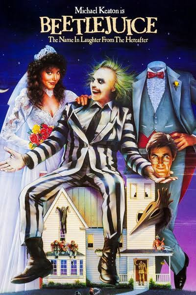

01
1988
COMÉDIA • FANTASIA
Os Fantasmas
BEETLEJUICE
Os Fantasmas
se Divertem
BEETLEJUICE
Uma casa, uma família recém-chegada e um fantasma que transforma uma situação incomum em uma história cheia de humor, fantasia e exagero visual.
01 / 09
1988